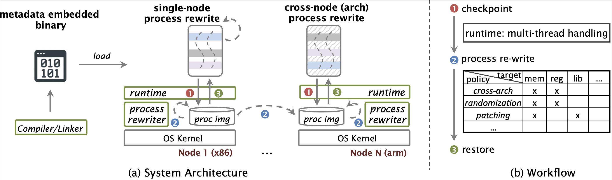

Dapper transforms a live process's state for different purposes. For example, Dapper supports live process migration of natively compiled Linux binaries across servers with CPUs of different architectures. It also support re-randomizing the stack and registers of a process to improve security.

Dapper was built on top of CRIU to dump
a running process and then transform the CRIU images to support restoration on servers of a different architecture.
Currently, Dapper supports process migration on x86-64 and aarch64 CPUs.
Please refer to the wiki page for a tutorial on how to rewrite process images with Dapper.